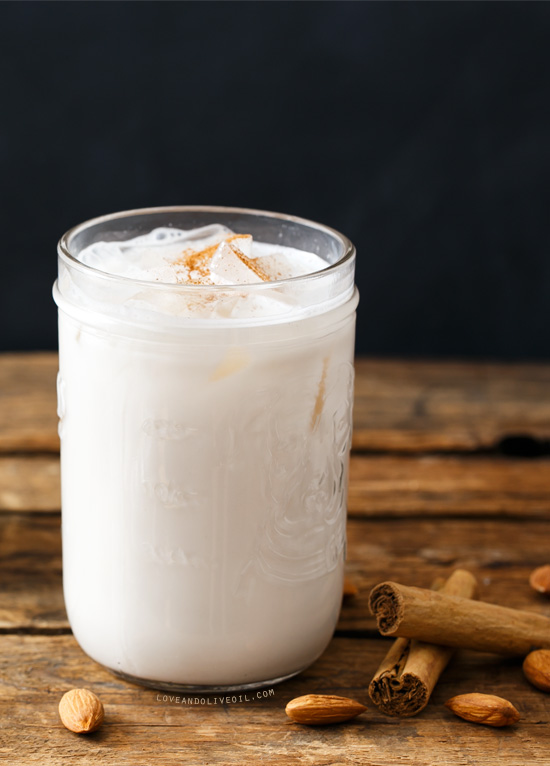

Horchata

Home
Description
HORCHATA is a sweet drink made of rice and milk that provides a
refreshing, easy way to cool down in the summer!
Ingredients
(For 12 cups, or about 12 servings)
- 1 cup uncooked white rice
- 2 cinnamon sticks
- 12 ounce chan evaporated milk
- 12 ounce can sweetened condensed milk
- 8 cups warm water divided
- Sugar to taste
- Ground cinnamon to garnish optional
- 1/2 teaspoon vanilla
Steps
- Wash and drain rice. Mix rice, cinnamon sticks, and 4 cups of water in a bowl and refrigerate covered overnight (4 hours minimum)
- After taking out the bowl, remove as much of the cinammon sticks as possible.
- Blend rice in multiple batches by adding parts of the rice/water mix and some of the left over cinammon stick. Blend until smooth and pastelike.
- Finely strain (preferably with cheesecloth) over a pitcher. Don't forget to press the rice mix with a spoon to extract as much liquid as possible!
- Repeat for the remaining rice/water/cinammon mix.
- Stir in milks, vanilla, and 4 cups of water. Stir well.
- Taste and add sugar/water to taste.
- Chill and stir before serving over plenty of ice.
- Enjoy!